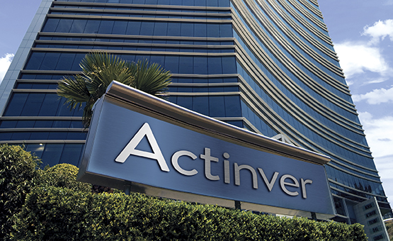
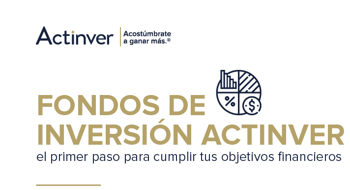
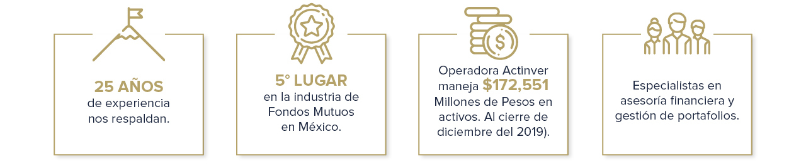

.jpg)
En la primera mitad de la década de los noventa México vivió un intenso boom de crédito. Don Hector Madero Hornedo fundador de Actinver tenía una empresa de Factoraje denominada Impulsora Factor, que fue la única factoring que llegó a emitir deuda en el mercado de valores. Él veía que la burbuja de crédito iba a terminar mal, como suelen terminar todos los booms, con un crack. Así que decidió ir reduciendo su operación gradualmente hasta que prácticamente quedó en un tamaño que ya no tendría repercusiones negativas de sufrirse una crisis. A principios del año 1994, Don Hector recibe la llamada de Oscar Espinoza, en aquel entonces Presidente de la Comisión Nacional de Valores, para decirle que estaba interesado en arrancar la figura de las Operadoras de Sociedades de Inversión Independientes, y que creía que la experiencia bursátil de él podría ser ideal para lanzar la primer operadora. Don Héctor tenía ya más de 30 años de experiencia como Agente de Bolsa persona física y en Casas de Bolsa. Don Héctor decidió afrontar el reto, y convocó a un grupo selecto de posibles inversionistas para conformar el capital inicial, que ascendió al equivalente a USD$4 millones de dólares, y proceden a concretar todas las instancias y requisitos
para poder constituirse y obtener el permiso para iniciar operaciones como Operadora de Fondos independiente. El 3 de Noviembre de 1994 don Héctor recibe la llamada de Luis Miguel Moreno, nuevo Presidente de la Comisión Nacional de Valores, quien le informa que el proceso va bien, que es probable la aprobación, pero que es necesario que el grupo de socios exhiban el capital depositándolo en una cuenta de Cheques, lo que se realizó unos días después. El 30 de Noviembre del mismo año, el grupo de accionistas originales de Actinver recibe la notificación de la aprobación del permiso para iniciar operaciones, sujeto a la revisión de los sistemas originales, que por cierto fueron proveídos por Bursamétrica (Ernesto O´Farrill). Una vez realizada la certificación de los sistemas, se dio el permiso para arrancar operaciones con el público para el 20 de diciembre. Un día antes, en la noche, ocurrió la devaluación, que mandó el tipo de cambio de $3 a $4.20 y luego a $6 pesos por dólar. El capital de Actinver invertido en su totalidad en una chequera en pesos, perdió la mitad de su poder adquisitivo, en unas cuantas horas. El desconcierto entre los accionistas era extremo. ¿Qué hacer? Todavía no se arrancaban las operaciones y ya se había perdido la mitad del capital en términos de dólares? Don Hector detecto una posible salida mediante la inversión en acciones de la minera Peñoles, que a pesar de la devaluación no se habían subido. Meses después comenta Don Hector, se había recuperado la totalidad del capital en términos de dólares. Pasó el primer año de la vida de Actinver, 1995, uno de los peores años en la historia económica de México, con enormes dificultades para abrir cuentas.
La gente no tenía ahorro. Más bien tenían créditos hipotecarios que con la hiperinflación se habían incrementado desproporcionadamente en su principal, y no había como pagarlos, a las elevadísimas tasas que se alcanzaron en ese periodo. Al cierre del año 1995 Actinver había logrado captar $85 millones de pesos, que eran totalmente insuficientes para pagar los muy austeros costos de operación. No había sueldo para Don Héctor por ejemplo. Las oficinas eran en la calle Enrique Wallón en la colonia Anzures, en una casa propiedad de Don Hector que no cobrara renta. El capital se había vuelto a perder. En los Estados Financieros el dictamen del auditor dejaba ver una situación crítica. En Marzo del año 1996 se concretó una asamblea extraordinaria de accionistas en la que se invitó a nuevos accionistas y en la cual se reestructuro el grupo operativamente, al entrar al staff José Pedro Valenzuela, Roberto Valdés Acra, Hector y Álvaro Madero. La figura de la operadora no era conocida, y sólo había tres más abiertas en México. Finacorp, Allen W Lloyd y una tercera en Monterrey que no logró subsistir. Con el tiempo, Actinver adquirió a ambos competidores. Finacorp en el 2001 y Allen W Lloyd en el 2006. En el 2003 el grupo abre una Afore que impactó fuertemente en esa industria al entrar al mercado con una agresiva filosofía de competencia, bajando las elevadas comisiones que imperaban en ese mercado. 5 años después, en el 2008, ante un cambio en la regulación que resultaba poco favorable para las afores no dominantes, se decide vender la Afore a Metlife.
Este fue una pequeña y breve informacion sobre nuestra empresa lo que sigue es como funciona y que servicios da la empresa Actinver.
Nuestra oferta de fondos de inversión se complementa con nuestros servicios de asesoría de inversión a través de cuentas administradas y mandatos institucionales, diseñados de acuerdo a las necesidades específicas de nuestros clientes, desde los que inician por primera vez a invertir, hasta los más sofisticados
Nuestra oferta primaria incluye nuestros fondos con la más amplia trayectoria y consistencia en rentabilidad en todas las clases de activos financieros. Así como, fondos de inversión innovadores, únicos en la industria en México. Puedes acceder a esta oferta sin un monto mínimo.
El complemento perfecto a la oferta primaria. Permite invertir en fondos sofisticados y temáticos de inversiones globales a partir de $500 mil pesos.
Nuestros Fondos Asegurados son únicos en la industria, ya que combinan inversión y cobertura de seguros de bienes e individuos.

Nuestra principal linea de negocios,capaz de conformar portafolios desde lo mas sencillo hasta lo mas sofistificado,siempre cone el objectivo de ofrecer los mejores resultados la oferta de fondos de actinver trata sobre que incluye todo tipo de activos que son complementados con productos globales gracias alas diferentes alianzas estrategias con empresas lideres en el mundo.
No te conformes con una cuenta de banco tradicional, en Banca Patrimonial Actinver te abrimos todas las posibilidades para transformar tu vida financiera. Accede a una amplia gama de instrumentos de inversión nacionales e internacionales, protección, divisas, créditos, fiduciario, planes personales para el retiro y más
--------Habilades de Actinver--------
Desde hace más de 26 años nos dedicamos a transformar patrimonios y somos referentes en asesoría de inversión México.
Cuentas con un asesor personal dedicado que te ofrecerá oportunidades de inversión adecuadas de forma transparente e imparcial.
Tienes acceso a una amplia variedad de instrumentos de inversión con activos nacionales e internacionales.
Contamos con un equipo de análisis financiero y económico reconocido a nivel nacional.
Mantenemos una constante comunicación para comprender tus necesidades y metas de inversión.
Podrás acceder a información exclusiva como webinars, tutoriales, reportes y análisis especializado.
| inversiones | |||
| tasa de interes | pais | año | dinero |
| 8% | japon | 2021 | 900,000 |
| 11% | rusia | 2021 | 3,000,00 |
| 10% | españa | 2021 | 2,000,00 |
| 9% | argentina | 2021 | 1,000,00 |
| 12% | colombia | 2021 | 2,000,00 |

----------La verdad la empresa Actinver es una empresa que realmente me ha gustado como funciona sus inversiones lo que ha hecho y esta pagina fue creada solo por fines escolares.---------